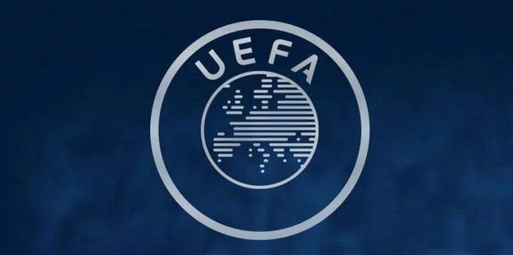

UEFA, 2018 finans yılı içinde Süper Lig'in, Avrupa'da en fazla zarar eden lig olduğunu duyurdu. Son 10 yılda en çok stadyum inşa eden ülkeler listesinde Türkiye ve Polonya zirvede yer alırken Türkiye, 2018 finans yılı gişe hasılatında yüzde 52 ile en fazla artış yaşayan ülkeler listende ilk sıranın sahibi oldu. UEFA'nın bu yıl 11'incisini yayımladığı "Avrupa Kulüp Futbolunun Görünümü" adlı 132 sayfalık finansal raporunda, kendisine bağlı liglerin ve kulüplerin ekonomik yapılarına ilişkin veriler paylaşıldı. Raporda, Süper Lig ve Türk takımlarına ilişkin birçok önemli bilgi verildi. Süper Lig, 2018 finans yılı içinde kur farkında yaşadığı değer kaybı nedeniyle Avrupa'da en fazla zarar eden lig oldu. Toplam 263 milyon avro zarar eden Süper Lig, diğer Avrupa ligleriyle kıyaslandığı mali tabloda 125 milyon avro döviz kaybı yaşadı. Raporda, "125 milyon avroluk döviz kaybı, söz konusu kaybın 73 milyon avro olduğu 2017 finansal yılına oranla Türk kulüplerini 2018'de daha sert bir şekilde etkiledi." ifadelerine yer verildi. İngiltere Premier Lig ise 382 milyon avro ile Avrupa'da en çok kar eden lig sıralamasında zirvenin sahibi oldu.
Avrupa'da 2018 finans yılı içinde en fazla net borcu olan kulüplerin sıralandığı 20 takımlı listeye 3 Türk takımı da girdi. Fenerbahçe 334 milyon avroyla 6'ncı, Beşiktaş 183 milyon avroyla 15'inci, Galatasaray ise 175 milyon avro ile 17'nci sırada yer aldı. Raporda, son 10 yılda en çok stadyum inşa eden ülkeler listesinde Türkiye ve Polonya öne çıktı. Söz konusu ülkeler, bu dönem içinde 20'den fazla stadyum inşa ederek zirvenin sahipleri oldu.

Türk takımları, 2018 finans yılı gişe hasılatında yüzde 52'lik artışla zirvede yer aldı. Türk takımları arasında Medipol Başakşehir, gişe hasılatını yüzde 158 artırarak bu kulvarda açık ara lider oldu. Türkiye'nin ardından en büyük gişe artışını, yüzde 24 ile İtalyan takımları gerçekleştirdi. Galatasaray ise bilet satışlarından en çok gelir eden kulüpler listesine giren tek Türk takımı oldu. Sarı-kırmızılılar, maç başına her biletinden ortalama 37 avro kazanarak Avrupa'da bu alanda en çok gelir elde eden 30. kulüp unvanını elde etti.